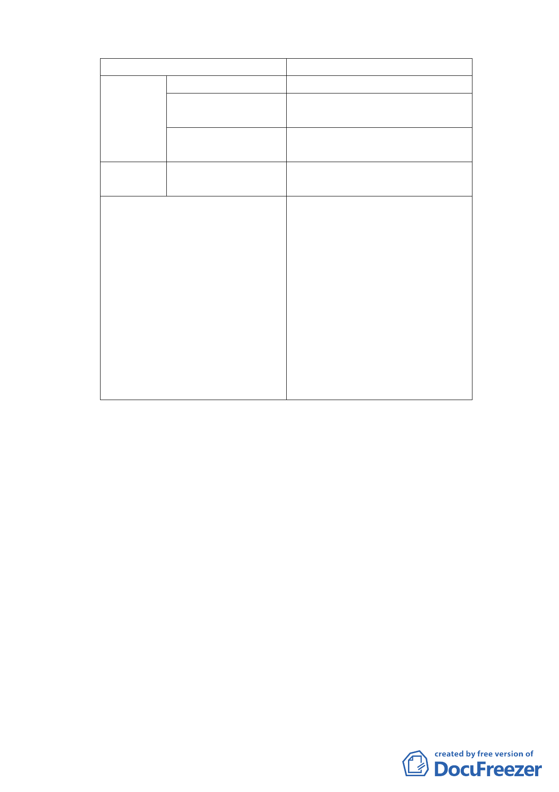

一、容積獎勵機制
項目
容積獎勵額度
策略地區 綠覆率達100%
法定基準容積2%
綠覆率達80%以上、未 法定基準容積1.5%
滿100%
綠覆率達60%以上 、未 法定基準容積1%
滿80%
非 指 定 策 綠覆率達60%以上
法定基準容積1%
略地區
附帶規定
1.綠覆率依「臺北市建築物及法定空
地綠化實施要點」第 12 點計算方
式。
2.基地應於 99 年 10 月 30 日前完成拆
除、綠美化，並向本府申請完工查
核。
3.綠美化完工後，維護管理應至基地
新建建物前(至少至 100 年 12 月 31
日止)。
4.基地未依前述規定期限完工或管
理維護者，則不得適用本案容積獎
勵，該部分之容積應予撤銷。
二、監督及考評機制
（一）本局(更新處)業列冊控管，如未於期限完工，將發文函告
申請人及相關單位該基地不得適用容積獎勵。
（二）委託專案輔導團隊協助各案期程控管及相關協助。
（三）與建管處建立平台，由本局將完工基地清冊送建管處列管。
（四）基地如於完工18個月內取得新建建造，建管處將通知本局，
辦理容積獎勵撤銷作業。
（五）各區公所協助不定期就美化完工基地，如有維管不良情形，
通報都市發展局。
（六）完工查核或維管不合規定者，本府得重新核定獎勵容積額
度。經本府通知限期改善二次仍未改善者，經本府核定後，
扣減該建築用地法定基準容積百分之零點五，並得連續扣
減之，但最高不得連續扣減超過法定基準容積百分之二。
-4-